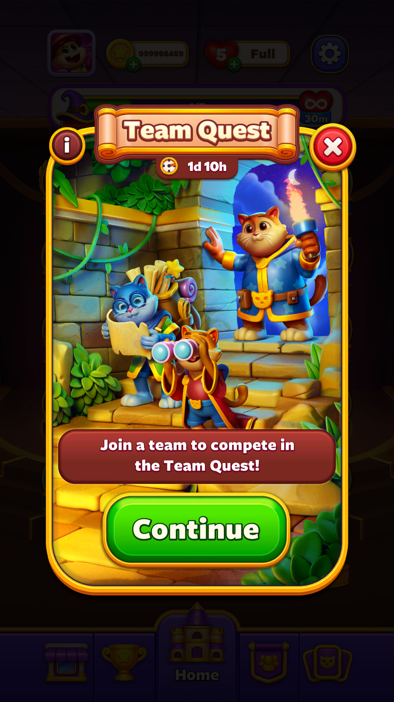
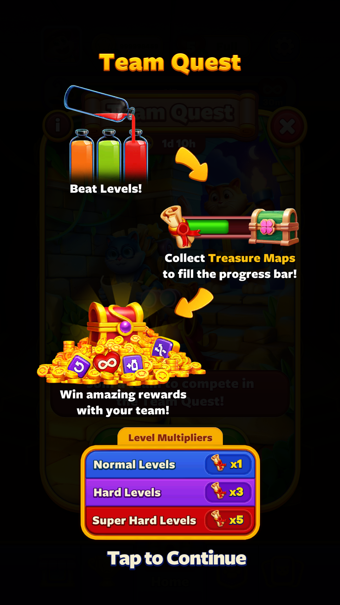

Nhiệm vụ đội (Team Quest)
Cho cả đội một mục tiêu chung nhưng yêu cầu từng thành viên góp công để nhận rương. Thiết kế kết hợp hợp tác tổng điểm với bảng đóng góp cá nhân, tránh đồng nhất đứng trong đội với quyền nhận mọi quà.
Chưa có case chính trong hai lượt review 15–16/11. Nội dung theo mã/config; ảnh ngữ cảnh không được tính thành playtest tính năng. Xem bằng chứng và phần còn thiếu.
Thiết kế chi tiết
Tóm tắt thiết kế
Cho cả đội một mục tiêu chung nhưng yêu cầu từng thành viên góp công để nhận rương. Thiết kế kết hợp hợp tác tổng điểm với bảng đóng góp cá nhân, tránh đồng nhất đứng trong đội với quyền nhận mọi quà.
Vào đội → Join trong cửa sổ → thắng level để đóng góp → theo dõi tổng điểm → mở rương đủ điều kiện → tiếp tục tới khi event kết thúc.
Diễn giải thiết kế từ hồ sơ đã đối chiếu; flow/outcome là hành vi mong đợi theo nguồn. Chỉ câu ghi rõ round2 là quan sát 16/11/2026 trên fixture 0.0.3129, không phải full UC pass.
3 ảnh chụp có nguồn · ảnh hiện ngay trong khung, bấm để mở ảnh gốc. Màu nhãn phân biệt playtest, lịch sử và ngữ cảnh.


Luồng người chơi từng bước
- 01
Gia nhập hành trình của đội
Người chơiMở lời mời hoặc thẻ trong chat đội rồi chọn Join.
Điều kiện / luật: Cần đội hợp lệ, asset và event; join window đóng thì không mặc nhiên được tham gia. Default client tắt và mốc level 45 chỉ là nguồn mặc định.
Kết quả theo đặc tả: Join thành công ghi nhận người tham gia và mở bản đồ event.
Nguồn: TeamQuest.json · use_cases/3 - 02
Đóng góp bằng level chính
Người chơiThắng level để thêm điểm cá nhân và điểm đội.
Điều kiện / luật: Default Normal/Hard/SuperHard cho 1/3/5 điểm; request tiếp theo mang score để đồng bộ.
Kết quả theo đặc tả: Tiến độ cá nhân tạo điều kiện nhận quà và vị trí trên bảng đóng góp.
Nguồn: TeamQuest.json · use_cases/4 - 03
Mở rương theo tổng điểm
Người chơiChọn mốc đã đủ RequiredTeamScore.
Điều kiện / luật: Không đóng góp bị trạng thái NotContributed; mỗi mốc ghi teamId đã claim để xử lý đổi đội.
Kết quả theo đặc tả: Thành viên có đóng góp nhận quà đúng mốc, không suy nhận lại khi đổi đội.
Nguồn: TeamQuest.json · use_cases/6 - 04
Nhận nhiều mốc đã vượt
Người chơiQuay lại event khi đội đã đi qua nhiều rương.
Điều kiện / luật: Có hàng đợi bulk để gom reward; reward có nhánh kèm Collection khi tính năng đó hoạt động.
Kết quả theo đặc tả: Các mốc đủ điều kiện có thể được trình diễn thành một lượt nhận dồn.
Nguồn: TeamQuest.json · use_cases/7
Quy tắc cần nắm
| Quy tắc | Hành vi theo nguồn | Căn cứ |
|---|---|---|
| Join khác tham gia đội | Có membership của Teams chưa đủ: event còn kiểm IsJoined và cửa sổ Join riêng. | |
| Điểm đồng đội là dữ liệu chia sẻ | Client có bộ đệm điểm nhưng tổng đội và bảng đóng góp đến từ response; cần hai tài khoản/server để kiểm tiến độ liên thành viên. |
Số liệu & phần thưởng
Phần thưởng
ĐIỂM ĐÓNG GÓP THEO ĐỘ KHÓ LEVEL
| Độ khó level | Điểm cộng | Nguồn |
|---|---|---|
| Normal | 1 điểm | NormalScore (json default) |
| Hard | 3 điểm | HardScore (json default) |
| Super Hard | 5 điểm | SuperHardScore (json default) |
| Thua level | 0 điểm (không bị trừ) | UC-05 |
PHẦN THƯỞNG MỐC RƯƠNG (cấu trúc)
| Thành phần | Điều kiện | Phần thưởng |
|---|---|---|
| Mốc rương (TeamQuestStepModel) | Tổng điểm đội ≥ RequiredTeamScore (server) và người chơi có đóng góp | RewardModel theo chestID (server) |
| Mốc rương khi Collection bật | Cùng điều kiện, CollectionService đang bật | RewardModelWithCollection thường chứa CollectionPack (server) |
| Người không đóng góp | Đội đã đạt mốc nhưng điểm cá nhân = 0 | Không nhận được gì (TeamQuestStepChestState.NotContributed) |
| Rương chưa mở khi hết sự kiện | Sự kiện chuyển LocalEnd/RemoteEnd | Mất không nhận được |
TRẠNG THÁI RƯƠNG (TeamQuestStepChestState)
| Mã | Trạng thái | Ý nghĩa |
|---|---|---|
| 0 | Claimed | Đã nhận thưởng |
| 1 | Claimable | Đủ điều kiện có thể mở |
| 2 | NotEnoughProgress | Đội chưa đủ điểm |
| 3 | NotClaimable | Không thể nhận |
| 4 | NotContributed | Người chơi không đóng góp điểm nào |
Phần thưởng theo code
| Ngữ cảnh | Phần thưởng | Evidence |
|---|---|---|
| Mốc rương (TeamQuestStepModel) | RewardModel do server gửi cho từng chestID ngưỡng RequiredTeamScore | TeamQuestService.GiveStepRewards; TeamQuestDataService.GetStepReward |
| Mốc rương khi Collection bật | RewardModelWithCollection (thường chứa CollectionPack) | TeamQuestDataService.GetStepReward; TeamQuestStepModel.RewardModelWithCollection |
| Không đóng góp | Không nhận được rương (TeamQuestStepChestState.NotContributed) | TeamQuestService.GetChestState; TeamQuestService.UserHasProgress |
Số liệu chính
| Chỉ số | Giá trị | Nguồn |
|---|---|---|
| Level mở khóa tối thiểu | 45 | TeamQuestConfigModel.FirstLevelToShow |
| Trạng thái bật/tắt mặc định | false (tắt) | TeamQuestConfigModel.IsEnabled |
| EventType (tournamentType gửi backend) | 2 | TeamQuestConfigModel.EventType |
| Điểm level thường | 1 | TeamQuestConfigModel.NormalScore |
| Điểm level Hard | 3 | TeamQuestConfigModel.HardScore |
| Điểm level Super Hard | 5 | TeamQuestConfigModel.SuperHardScore |
| HTTP status sự kiện không hoạt động | 425 | TeamQuestService.NotActiveStatusCode |
| Asset bundle của sự kiện | team_quest_bundle | TeamQuestService.Initialize |
| Số trạng thái sự kiện | 10 (Disable=0 … AssetsNotReady=9) | TeamQuestStateType |
| Số trạng thái rương | 5 (Claimed=0 … NotContributed=4) | TeamQuestStepChestState |
| Số loại thông báo bảng xếp hạng | 6 (None=0 … TeamQuestClaimedChestInAnotherTeam=5) | TeamQuestAlertMessageType |
| Số nguồn mở popup chính | 4 (Force=0, LobbyIcon=1, TeamBanner=2, AfterJoin=3) | TeamQuestPopUpImpressionSource |
| Tab của popup | Join=0, Leaderboard=1, Info=3 | TeamQuestPopupStateType |
| Loại request backend | Join=0, GetLeaderboard=1, Claim=2 | TeamQuestTournamentRequestType |
| Ngưỡng điểm từng mốc | RequiredTeamScore (server) | TeamQuestStepModel.RequiredTeamScore |
| Số mốc rương | Do server gửi qua teamAdventureSteps[] (server) | TeamQuestLeaderboardModel |
| Thời gian sự kiện | startTime / finishTime (server) | TeamQuestStatusModel |
| Điểm đội tại thời điểm người chơi vào | scoreAtUserJoin (server) | TeamQuestLeaderboardModel.scoreAtUserJoin |
| Chỉ số ghép cặp đội | elo (server) | TeamQuestLeaderboardModel.elo |
| Tên khối sync | TeamQuestDataModel | TeamQuestDataService.GetSyncName |
Các quyết định trong luồng
| Tình huống | Cách xử lý theo nguồn | Căn cứ |
|---|---|---|
| Vì sao rương đội vẫn kiểm đóng góp cá nhân? | Ngưỡng chung thúc đẩy hợp tác, còn NotContributed đặt điều kiện tham gia tối thiểu. Khi thiết kế UI cần giải thích cả hai lý do khóa: đội chưa đủ điểm hoặc bản thân chưa góp. | Nhận định thiết kế dựa trên cơ chế trong hồ sơ, không phải kết quả đo chuyển đổi. Nguồn: TeamQuest.json · flow |
Nhánh lỗi và phục hồi
| Điều kiện | Hành vi mong đợi | Phạm vi đã kiểm |
|---|---|---|
| Mất mạng, đổi đội hoặc event hết cửa sổ | Không lấy cache tổng đội làm xác nhận claim mới; kiểm event/teamId và các mốc đã nhận trước khi trao. | Đọc source và hồ sơ runtime có sẵn; chỉ xác minh nhánh được nêu rõ, không phát sinh playtest mới. |
Nhận định & vận dụng
Ngưỡng chung thúc đẩy hợp tác, còn NotContributed đặt điều kiện tham gia tối thiểu. Khi thiết kế UI cần giải thích cả hai lý do khóa: đội chưa đủ điểm hoặc bản thân chưa góp.
Suy luận thiết kế; đọc cùng quyết định và source_refs, không phải uplift đã đo.
Ảnh chụp bổ sung & nguồn bằng chứng
Không coi ảnh lịch sử hoặc ảnh ép bật bằng fixture là trạng thái production hiện tại.
Những ảnh còn lại của tính năng được giữ mở sẵn bên dưới. Các ảnh đã đặt ở phần tóm tắt hoặc bước liên quan không lặp lại trong gallery này.


Case đầy đủ: expected, actual và ledger · Ảnh lịch sử và tài nguyên gốc
Tổng quan & điều kiện mở
Mô tả
- Team Quest (backend gọi là 'team adventure') là sự kiện hợp tác trong đội: mọi thành viên cùng gom điểm vào một thanh tiến độ chung.
- Mỗi level thắng cộng điểm theo độ khó: level thường 1 điểm, Hard 3 điểm, Super Hard 5 điểm (client default).
- Tổng điểm đội mở dần các mốc rương; mỗi mốc có ngưỡng RequiredTeamScore do server quyết định.
- Chỉ thành viên CÓ đóng góp mới mở được rương; người không đóng góp bị chặn ở trạng thái NotContributed.
- Có cửa sổ tham gia: khi isJoinWindowEnded bật thì không thể Join nữa, dù sự kiện vẫn đang chạy.
- Bảng xếp hạng nội bộ đội liệt kê điểm đóng góp của từng thành viên, tạo áp lực xã hội chống 'free rider'.
- Sự kiện được đẩy qua nhiều điểm chạm: nút lobby, thẻ sự kiện trong chat đội, popup mời tham gia và popup tự mở sau khi Join.
- Đổi đội giữa chừng không giúp farm thêm rương: teamId đã mở rương được ghi vào OpenedChestTeamIds.
- Khi Collection đang bật, phần thưởng mốc chuyển sang RewardModelWithCollection (thường chứa CollectionPack).
- Điểm cá nhân có bộ đệm local và được gửi qua score của request kế tiếp. Điều đó chưa chứng minh mọi gián đoạn hoặc đồng bộ lại đều không mất tiến độ; tổng đội và xác nhận đóng góp vẫn cần response server.
Mở khóa & điểm vào
TeamQuestStateService.GetEventState(): Disable(0) nếu TeamQuestConfigModel.IsEnabled == false; ProgressNotEnough(1) nếu level người chơi < FirstLevelToShow; NoCache(2) nếu chưa fetch được; AssetsNotReady(9) nếu bundle 'team_quest_bundle' chưa tải. Ngoài ra phải có đội — TeamQuestService.GetTeamID()/IsUserEligibleToJoin() dựa vào TeamsService. Client default: IsEnabled=false, EventType=2, FirstLevelToShow=45 (Resources/defaultconfigs/TeamQuestConfigModel.json).
Điểm vào:
- TeamQuestLobbyButton ở lobby (IsLobbyButtonVisible / ShouldShowJoinTextLobbyIcon)
- TeamQuestTeamChatElementView — thẻ sự kiện gắn trong chat đội (ITeamChatEventView), nguồn TeamBanner
- TeamQuestJoinPopup — popup mời tham gia (ShouldShowJoinPopup / ShouldShowForceJoinPopup)
- TeamQuestPopup — bản đồ tiến độ + rương (ShouldShowEventPopup / ShouldShowForceEventPopup)
- Tự mở popup ngay sau khi Join thành công (ShouldShowPopupAfterJoin, source AfterJoin)
- TeamQuestInfoPopup — nút info (TeamQuestInfoPopupImpressionSource InfoButton/Force)
- TeamQuestLeaderboardView — bảng đóng góp trong đội
Các sự kiện liên quan
Luồng chi tiết theo nguồn
Cách hoạt động
- Khởi tạo: Initialize() đặt bundle sự kiện là 'team_quest_bundle' và subscribe signal đổi đội.
- Tải asset: nếu bundle chưa sẵn sàng, state = AssetsNotReady(9), popup bị chặn (CheckAndResolveAssetDependency).
- Kiểm tra điều kiện: state Disable(0) nếu IsEnabled = false, ProgressNotEnough(1) nếu level < 45, NoCache(2) nếu chưa fetch được (GetEventState).
- Lấy dữ liệu: gửi request tới /v1/get-team-adventure với payload {score, tournamentType (EventType = 2), teamID} (SendGetRequest).
- So sánh cache: nếu tournamentID khác cache cũ thì xoá toàn bộ dữ liệu sự kiện (ChangeTournamentCache → ResetEventData).
- Mời tham gia: popup Join hoặc nút lobby đổi nhãn thành 'Join' khi chưa tham gia (ShouldShowJoinTextLobbyIcon).
- Tham gia: bấm Join → /v1/join-team-adventure; thành công thì IsJoined = true, server ghi scoreAtUserJoin (điểm đội tại thời điểm vào), analytics team_quest_joined.
- Ngay sau Join, popup bản đồ tự mở với nguồn AfterJoin(3) (SetShouldShowPopupAfterJoin).
- Chơi: mỗi level thắng quy đổi độ khó thành điểm (Normal 1, Hard 3, SuperHard 5) và cộng vào cả tiến độ đội lẫn điểm cá nhân, rồi đẩy lên server qua trường 'score' của request kế tiếp (TryIncreaseTaskProgress).
- Theo dõi mốc: bản đồ cho biết mốc hiện tại và còn thiếu bao nhiêu điểm (GetStepForProgress, RemainingScoreForStep).
- Nhận rương: khi đội vượt ngưỡng và người chơi có đóng góp, rương chuyển sang Claimable(1) → TryClaimStep(stepIndex) trao RewardModel.
- Xác nhận: client gọi /v1/claim-team-adventure và ghi teamId vào OpenedChestTeamIds để chống nhận trùng khi đổi đội (SetStepAsClaimed).
- Nhận dồn: nếu offline lâu và đội vượt nhiều mốc, các rương tồn đọng được trao lần lượt (HasBulkRewardInQueue → GiveBulkRewardInQueue).
- Chấm đỏ lobby: so LastSeenProgress với tiến độ hiện tại để chạy animation và tắt chấm đỏ sau khi xem (HasUnseenProgress, MarkLobbySeen).
- Kết thúc: hết giờ → LocalEnd(6), server báo isFinished → RemoteEnd(7), nhận xong hết → Claimed(8); analytics team_quest_finished.
Luồng chi tiết theo code
Initialize() đặt _teamQuestBundleId = 'team_quest_bundle' và subscribe signal (đổi đội, v.v.). InitializeData/IntervalUpdate → nếu TeamQuestStateService.ShouldSendFetchEventRequest() thì TryFetchCurrentEvent() → FetchCurrentEvent() gọi TeamQuestRemoteService.SendGetRequest(TeamQuestTournamentRequestModel{score, tournamentType, teamID}) tới teamQuestGetUrl (/v1/get-team-adventure). Response TeamQuestResponseModel{eventStatusResponse: TeamQuestStatusModel{tournamentID, teamID, startTime, finishTime, isFinished, isJoined, isJoinWindowEnded}, eventLeaderboardResponse: TeamQuestLeaderboardModel{isClaimed, totalScore, elo, scoreAtUserJoin, teamAdventureLeaderboard[], teamAdventureSteps[]}, custom_error, message}. Mã trạng thái 425 (NotActiveStatusCode) nghĩa là sự kiện chưa/không hoạt động. ChangeTournamentCache() so tournamentID; nếu khác → TeamQuestDataService.ResetEventData(). Người chơi bấm Join → TryJoin() gọi SendJoinRequest tới teamQuestJoinUrl (/v1/join-team-adventure); thành công thì SetIsJoined(true), analytics team_quest_joined, và SetShouldShowPopupAfterJoin(true). Trong phiên: mỗi lần thắng level, TryIncreaseTaskProgress(LevelDifficultyType) quy đổi độ khó thành điểm (NormalScore=1 / HardScore=3 / SuperHardScore=5) rồi IncreaseProgress(scoreIncrement) → TeamQuestDataService.SetQuestProgress(extraEarnedProgress) và IncrementUserScore(amount) (điểm cá nhân, dùng cho leaderboard đội và cho điều kiện 'đã đóng góp'). Điểm được đẩy lên server ở request kế tiếp qua trường score của TeamQuestTournamentRequestModel. Mốc rương: GetStepForProgress(progress), IsTeamProgressEnoughForStep(stepIndex), RemainingScoreForStep(stepIndex). Claim: TryClaimStep(stepIndex) → GiveStepRewards(stepModel) dùng RewardModel hoặc RewardModelWithCollection (khi Collection bật), SetStepAsClaimed(stepIndex, teamId) ghi teamId vào TeamQuestTournamentProgress.OpenedChestTeamIds để chống nhận lại khi đổi đội; SendClaimRequest() gọi teamQuestClaimUrl (/v1/claim-team-adventure). Thưởng dồn khi offline: HasBulkRewardInQueue()/GiveBulkRewardInQueue(). Kết thúc: state LocalEnd(6) khi hết giờ ở client, RemoteEnd(7) khi server báo isFinished, Claimed(8) sau khi nhận xong; ShouldShowFinishedAlert() + TeamQuestAlertMessageType quyết định thông báo hiển thị.
Use case (16)
Đặc tả UC mô tả hành vi theo nguồn. Kết quả mong đợi không phải kết quả đã chạy; case quan sát được liên kết riêng ở từng UC.
Bấm vào từng use case để mở. Mở/đóng tất cả
UC-01 Xác định trạng thái và hiện icon Team Quest
Chưa có case trực tiếp trong hai lượt review 15–16/11.
Các bước- TeamQuestStateService.GetEventState() trả Disable(0)/ProgressNotEnough(1)/NoCache(2)/NotIntroduced(3)/PreJoin(4)/InProgress(5)/LocalEnd(6)/RemoteEnd(7)/Claimed(8)/AssetsNotReady(9)
- UpdateState() phát signal khi state đổi
- TeamQuestService.IsLobbyButtonVisible() / TeamQuestStateService.IsLobbyButtonVisible()
- ShouldShowJoinTextLobbyIcon() đổi nhãn nút thành 'Join' khi chưa tham gia
| Actor | System |
|---|---|
| Trigger | Vào lobby / IntervalUpdate |
| Điều kiện | Đã có RemoteConfigs và thông tin đội |
| Kết quả mong đợi theo nguồn | Nút lobby hiện/ẩn kèm TeamQuestLobbyButtonViewModel |
| Quy tắc / số liệu | Client default: IsEnabled=false, FirstLevelToShow=45, EventType=2 |
| Bằng chứng đặc tả | TeamQuestStateService.GetEventState; TeamQuestStateService.UpdateState; TeamQuestStateService.IsLobbyButtonVisible; TeamQuestStateService.ShouldShowJoinTextLobbyIcon; TeamQuestService.GetLobbyButtonViewModel |
UC-02 Tải asset bundle riêng của sự kiện
Chưa có case trực tiếp trong hai lượt review 15–16/11.
Các bước- TeamQuestService.Initialize() đặt _teamQuestBundleId = 'team_quest_bundle'
- NeedToDownloadAssets() / TeamQuestStateService.ShouldDownloadAssets()
- CheckAndResolveAssetDependency() tải qua AssetManager
| Actor | System |
|---|---|
| Trigger | Initialize / trước khi mở popup |
| Điều kiện | Sự kiện được bật |
| Kết quả mong đợi theo nguồn | Trong lúc tải, state = AssetsNotReady(9), popup không mở |
| Quy tắc / số liệu | - |
| Bằng chứng đặc tả | TeamQuestService.Initialize; TeamQuestService.NeedToDownloadAssets; TeamQuestService.CheckAndResolveAssetDependency; TeamQuestStateService.ShouldDownloadAssets |
UC-03 Lấy trạng thái + bảng xếp hạng sự kiện từ server
Chưa có case trực tiếp trong hai lượt review 15–16/11.
Các bước- TeamQuestService.TryFetchCurrentEvent() → FetchCurrentEvent()
- TeamQuestRemoteService.SendGetRequest(TeamQuestTournamentRequestModel{score, tournamentType, teamID}) tới teamQuestGetUrl (/v1/get-team-adventure)
- ChangeTournamentCache(response): nếu tournamentID khác cache → TeamQuestDataService.ResetEventData()
- TeamQuestDataService.SetEventStatusCache(TeamQuestStatusModel) và SetTournamentCache(TeamQuestLeaderboardModel)
- Nếu HTTP status = 425 (NotActiveStatusCode) → coi như sự kiện không hoạt động
| Actor | Server |
|---|---|
| Trigger | InitializeData / IntervalUpdate |
| Điều kiện | ShouldSendFetchEventRequest() == true và người chơi có đội |
| Kết quả mong đợi theo nguồn | TeamQuestStatusCacheModel + TeamQuestTournamentCacheModel được cập nhật (tổng điểm đội, các mốc, bảng xếp hạng thành viên) |
| Quy tắc / số liệu | NotActiveStatusCode = 425 (const TeamQuestService) |
| Bằng chứng đặc tả | TeamQuestService.TryFetchCurrentEvent; TeamQuestService.FetchCurrentEvent; TeamQuestRemoteService.SendGetRequest; TeamQuestService.ChangeTournamentCache; TeamQuestDataService.SetEventStatusCache; TeamQuestDataService.SetTournamentCache; TeamQuestDataService.ResetEventData |
UC-04 Tham gia sự kiện (Join) trong cửa sổ cho phép
Chưa có case trực tiếp trong hai lượt review 15–16/11.
Các bước- TeamQuestService.TryJoin() (Task<bool>)
- TeamQuestRemoteService.SendJoinRequest(requestModel) tới teamQuestJoinUrl (/v1/join-team-adventure)
- Thành công → TeamQuestDataService.SetIsJoined(true); ScoreAtUserJoin được server ghi lại (điểm đội tại thời điểm tham gia)
- SetShouldShowPopupAfterJoin(true) → mở TeamQuestPopup với source AfterJoin(3)
- EventSender.SendTeamQuestJoined (team_quest_joined)
| Actor | Player |
|---|---|
| Trigger | Bấm Join ở TeamQuestJoinPopup hoặc nút lobby |
| Điều kiện | IsUserEligibleToJoin() && IsStateEligibleToJoin() && !IsJoinWindowEnded() |
| Kết quả mong đợi theo nguồn | Người chơi được tính là thành viên của quest, bắt đầu đóng góp điểm |
| Quy tắc / số liệu | TeamQuestStatusCacheModel.IsJoinWindowEnded chặn tham gia muộn; TeamQuestDataService.IsJoinWindowEnded() |
| Bằng chứng đặc tả | TeamQuestService.TryJoin; TeamQuestRemoteService.SendJoinRequest; TeamQuestDataService.SetIsJoined; TeamQuestService.SetShouldShowPopupAfterJoin; TeamQuestDataService.IsJoinWindowEnded; TeamQuestStateService.IsStateEligibleToJoin |

UC-05 Thắng level → cộng điểm theo độ khó
Chưa có case trực tiếp trong hai lượt review 15–16/11.
Các bước- TeamQuestService.TryIncreaseTaskProgress(LevelDifficultyType difficultyType)
- Quy đổi: Normal → NormalScore (1), Hard → HardScore (3), SuperHard → SuperHardScore (5)
- IncreaseProgress(scoreIncrement) → TeamQuestDataService.SetQuestProgress(extraEarnedProgress) cộng vào Progress của đội (bản local)
- IncrementUserScore(amount) cộng điểm cá nhân dùng cho bảng xếp hạng đội
- Điểm được gửi lên server qua trường 'score' trong request kế tiếp
| Actor | Player |
|---|---|
| Trigger | Hoàn thành level |
| Điều kiện | Đã Join, state InProgress(5) |
| Kết quả mong đợi theo nguồn | Thanh tiến độ đội tăng; UserHasProgress() = true (đủ điều kiện mở rương) |
| Quy tắc / số liệu | Thua level không trừ điểm. Giá trị 1/3/5 là client default, server có thể ghi đè. |
| Bằng chứng đặc tả | TeamQuestService.TryIncreaseTaskProgress; TeamQuestService.IncreaseProgress; TeamQuestDataService.SetQuestProgress; TeamQuestDataService.IncrementUserScore; TeamQuestService.UserHasProgress; TeamQuestService.GetUserScore |
UC-06 Theo dõi tiến độ và mốc rương kế tiếp
Chưa có case trực tiếp trong hai lượt review 15–16/11.
Các bước- TeamQuestService.GetTotalProgress() lấy tổng điểm đội
- GetStepForProgress(progress) xác định mốc hiện tại
- IsTeamProgressEnoughForStep(stepIndex) / RemainingScoreForStep(stepIndex) cho biết còn thiếu bao nhiêu
- GetProgressForStep(stepIndex[, totalProgress]) và GetLastSeenProgressForStep(stepIndex) để chạy animation tăng dần
- TeamQuestPopupProgressBarView hiển thị; TeamQuestViewModel/TeamQuestStepViewModel cấp dữ liệu
- IsMaxProgressReached() khi hoàn thành toàn bộ mốc
| Actor | Player |
|---|---|
| Trigger | Mở TeamQuestPopup |
| Điều kiện | Có cache sự kiện |
| Kết quả mong đợi theo nguồn | Bản đồ tiến độ với các rương khoá/mở |
| Quy tắc / số liệu | TeamQuestStepModel.RequiredTeamScore là ngưỡng điểm đội của từng mốc (do server) |
| Bằng chứng đặc tả | TeamQuestService.GetTotalProgress; TeamQuestService.GetStepForProgress; TeamQuestService.IsTeamProgressEnoughForStep; TeamQuestService.RemainingScoreForStep; TeamQuestService.GetProgressForStep; TeamQuestService.IsMaxProgressReached; TeamQuestService.GetViewModel |
UC-07 Nhận thưởng rương của một mốc
Chưa có case trực tiếp trong hai lượt review 15–16/11.
Các bước- TeamQuestService.GetChestState(step, index) trả TeamQuestStepChestState: Claimed(0), Claimable(1), NotEnoughProgress(2), NotClaimable(3), NotContributed(4)
- TryClaimStep(stepIndex) → GiveStepRewards(stepModel) dùng RewardModel hoặc RewardModelWithCollection
- TeamQuestDataService.SetStepAsClaimed(stepIndex, teamId) — ghi teamId vào TeamQuestTournamentProgress.OpenedChestTeamIds
- TeamQuestService.SendClaimRequest() → teamQuestClaimUrl (/v1/claim-team-adventure)
- EventSender.SendTeamQuestRewardClaimed(step, rewardModel) (team_quest_reward_claimed)
| Actor | Player |
|---|---|
| Trigger | Bấm vào rương đã mở |
| Điều kiện | IsStepClaimable(stepIndex) và người chơi CÓ đóng góp |
| Kết quả mong đợi theo nguồn | Phần thưởng vào túi; rương chuyển trạng thái Claimed |
| Quy tắc / số liệu | NotContributed: người chơi chưa có điểm cá nhân thì không được mở rương dù đội đã đạt mốc |
| Bằng chứng đặc tả | TeamQuestService.GetChestState; TeamQuestService.TryClaimStep; TeamQuestService.GiveStepRewards; TeamQuestDataService.SetStepAsClaimed; TeamQuestService.SendClaimRequest; TeamQuestService.IsStepClaimable; TeamQuestService.IsStepClaimed |
UC-08 Nhận dồn nhiều rương cùng lúc (bulk)
Chưa có case trực tiếp trong hai lượt review 15–16/11.
Các bước- TeamQuestService.GetClaimableSteps(steps) / GetUnclaimedSteps() liệt kê các mốc chưa nhận
- GetClaimableStepCountForTeamProgress(progress) tính số rương mở được theo tổng điểm hiện tại
- HasBulkRewardInQueue() → GiveBulkRewardInQueue() trao lần lượt
- HasUnseenCompletedStep() bật chấm đỏ trên nút lobby
| Actor | System |
|---|---|
| Trigger | Quay lại sau thời gian offline, đội đã vượt nhiều mốc |
| Điều kiện | GetClaimableStepsCount() > 1 |
| Kết quả mong đợi theo nguồn | Người chơi nhận toàn bộ rương tồn đọng trong một luồng |
| Quy tắc / số liệu | TeamQuestStepModel.CompletedSeen đánh dấu đã xem |
| Bằng chứng đặc tả | TeamQuestService.GetClaimableSteps; TeamQuestService.GetUnclaimedSteps; TeamQuestService.GetClaimableStepsCount; TeamQuestService.GetClaimableStepCountForTeamProgress; TeamQuestService.HasBulkRewardInQueue; TeamQuestService.GiveBulkRewardInQueue; TeamQuestService.HasUnseenCompletedStep |
UC-09 Bảng xếp hạng đóng góp trong đội
Chưa có case trực tiếp trong hai lượt review 15–16/11.
Các bước- TeamQuestService.GetLeaderboard(selectable) dựng List<TeamQuestLeaderboardPlayerViewModel> từ TeamQuestLeaderboardPlayer{userPublicID, userName, score, fbImageURL, imageID, tokenID, nameStyle, frameID, isMe}
- GetLeaderboardViewModel() gói cho TeamQuestLeaderboardView / TeamQuestLeaderboardViewAdapter
- TeamQuestLeaderboardAlertElementView + TeamQuestLeaderboardAlertViewModel chèn dòng thông báo (TeamQuestAlertMessageType)
- TeamQuestLeaderboardFactory dựng item
| Actor | Player |
|---|---|
| Trigger | Mở tab leaderboard trong popup |
| Điều kiện | Có TeamQuestLeaderboard trong cache |
| Kết quả mong đợi theo nguồn | Danh sách thành viên kèm điểm đóng góp, có thể chọn để xem hồ sơ nếu selectable |
| Quy tắc / số liệu | GetAlertMessageType(): None(0), TeamQuestCompletedNoContribution(1), TeamQuestCompleted(2), TeamQuestFinished(3), TeamQuestClaimedChest(4), TeamQuestClaimedChestInAnotherTeam(5) |
| Bằng chứng đặc tả | TeamQuestService.GetLeaderboard; TeamQuestService.GetLeaderboardViewModel; TeamQuestService.GetAlertMessageType; TeamQuestLeaderboardFactory |
UC-10 Đổi đội giữa sự kiện
Chưa có case trực tiếp trong hai lượt review 15–16/11.
Các bước- TeamQuestService.DeleteCacheIfTeamChanged() so teamID cache với TeamsService
- DeleteLeaderboardCache() / TeamQuestDataService.DeleteTournamentCache() xoá bảng cũ
- OpenedChestTeamIds giữ lại danh sách teamId đã mở rương → nếu vào lại đội cũ vẫn không nhận trùng
- Nếu nhận rương ở đội khác, alert TeamQuestClaimedChestInAnotherTeam(5) hiển thị
| Actor | Player |
|---|---|
| Trigger | Rời/đổi đội trong Teams |
| Điều kiện | Đang tham gia Team Quest |
| Kết quả mong đợi theo nguồn | Tiến độ đội mới được tải lại, không lợi dụng đổi đội để farm rương |
| Quy tắc / số liệu | TeamQuestTournamentProgress.OpenedChestTeamIds là mảng string |
| Bằng chứng đặc tả | TeamQuestService.DeleteCacheIfTeamChanged; TeamQuestService.DeleteLeaderboardCache; TeamQuestDataService.DeleteTournamentCache; TeamQuestDataService.SetStepAsClaimed; TeamQuestService.GetTeamID |
UC-11 Popup tự mở và thẻ sự kiện trong chat đội
Chưa có case trực tiếp trong hai lượt review 15–16/11.
Các bước- TeamQuestStateService.ShouldShowJoinPopup() / ShouldShowForceJoinPopup() / ShouldShowEventPopup() / ShouldShowForceEventPopup()
- TeamQuestService.GetTeamChatElementViewModel() dựng thẻ sự kiện; TeamQuestDataService.GetIsTeamChatElementVisible()/SetIsTeamChatElementVisible()
- Mở TeamQuestPopup/TeamQuestJoinPopup với TeamQuestPopupArguments, nguồn TeamQuestPopUpImpressionSource: Force(0), LobbyIcon(1), TeamBanner(2), AfterJoin(3)
- SetIntroduceEvent(introduced) → TeamQuestDataService.SetEventIntroduced/SetEventEverIntroduced
- EventSender.SendTeamQuestPopUpImpression / SendTeamQuestJoinPopUpImpression
| Actor | System |
|---|---|
| Trigger | Vào lobby / mở chat đội |
| Điều kiện | State phù hợp |
| Kết quả mong đợi theo nguồn | Sự kiện được đẩy tới người chơi qua nhiều điểm chạm |
| Quy tắc / số liệu | TeamQuestPopupStateType: Join(0), Leaderboard(1), Info(3) |
| Bằng chứng đặc tả | TeamQuestStateService.ShouldShowJoinPopup; TeamQuestStateService.ShouldShowForceEventPopup; TeamQuestService.GetTeamChatElementViewModel; TeamQuestService.SetIntroduceEvent; TeamQuestDataService.SetEventIntroduced; EventSender.SendTeamQuestPopUpImpression |
UC-12 Kết thúc sự kiện (hết giờ local hoặc server báo)
Chưa có case trực tiếp trong hai lượt review 15–16/11.
Các bước- TeamQuestService.GetRemainingSeconds() / GetEndDate() / GetStartDateAsUnix() từ TeamQuestStatusCacheModel.StartTime/EndTime
- TeamQuestStateService.IsFinished() / IsRemoteEnd() → state LocalEnd(6) hoặc RemoteEnd(7)
- ShouldShowFinishedAlert() hiển thị TeamQuestAlertMessageType.TeamQuestFinished(3)
- EventSender.SendTeamQuestFinished (team_quest_finished)
- Sau khi claim hết → IsClaimed() → state Claimed(8)
| Actor | System |
|---|---|
| Trigger | Thời gian vượt finishTime hoặc isFinished = true |
| Điều kiện | - |
| Kết quả mong đợi theo nguồn | Sự kiện đóng; rương chưa mở bị mất |
| Quy tắc / số liệu | Hai state LocalEnd/RemoteEnd tách biệt để xử lý lệch giờ client-server |
| Bằng chứng đặc tả | TeamQuestService.GetRemainingSeconds; TeamQuestService.GetEndDate; TeamQuestStateService.IsFinished; TeamQuestStateService.IsRemoteEnd; TeamQuestStateService.IsClaimed; TeamQuestStateService.ShouldShowFinishedAlert; EventSender.SendTeamQuestFinished |
UC-13 Mất mạng / lỗi request
Chưa có case trực tiếp trong hai lượt review 15–16/11.
Các bước- TeamQuestStateService.ShouldShowNoInternetConnection() bật popup báo mất mạng
- TeamQuestResponseModel.custom_error / message chứa mã lỗi từ backend
- State giữ NoCache(2) nếu chưa từng fetch được; IntervalUpdate thử lại
- Điểm đóng góp vẫn tích local và đẩy lên ở request thành công kế tiếp
| Actor | System |
|---|---|
| Trigger | SendGetRequest/SendJoinRequest/SendClaimRequest thất bại |
| Điều kiện | - |
| Kết quả mong đợi theo nguồn | Không mất tiến độ cá nhân; các thao tác cần server (join/claim) bị chặn cho tới khi có mạng |
| Quy tắc / số liệu | Trạng thái 425 = sự kiện không hoạt động (khác lỗi mạng) |
| Bằng chứng đặc tả | TeamQuestStateService.ShouldShowNoInternetConnection; TeamQuestService.TryFetchCurrentEvent; TeamQuestService.NotActiveStatusCode; TeamQuestResponseModel |
UC-14 Chấm đỏ và tiến độ 'chưa xem' trên nút lobby
Chưa có case trực tiếp trong hai lượt review 15–16/11.
Các bước- TeamQuestService.GetLobbyProgress() / TeamQuestDataService.GetLobbyProgress() (TeamQuestTournamentProgress.LobbyProgressCount)
- HasUnseenProgress() so LastSeenProgress với tiến độ hiện tại
- TrySetLastSeenLobbyButtonProgress() và TeamQuestDataService.SetLastSeenProgress(progress)
- TeamQuestDataService.MarkLobbySeen()
- Animation theo TeamQuestLobbyButtonAnimationConfig / TeamQuestPopupAnimationConfig
| Actor | System |
|---|---|
| Trigger | Về lobby sau khi đội tăng điểm |
| Điều kiện | - |
| Kết quả mong đợi theo nguồn | Nút lobby chạy animation tăng tiến độ và tắt chấm đỏ sau khi xem |
| Quy tắc / số liệu | - |
| Bằng chứng đặc tả | TeamQuestService.GetLobbyProgress; TeamQuestService.HasUnseenProgress; TeamQuestService.TrySetLastSeenLobbyButtonProgress; TeamQuestDataService.SetLastSeenProgress; TeamQuestDataService.MarkLobbySeen |
UC-15 Thưởng có Collection pack
Chưa có case trực tiếp trong hai lượt review 15–16/11.
Các bước- TeamQuestDataService.GetStepReward(stepModel) chọn RewardModelWithCollection thay cho RewardModel
- TeamQuestService.ShouldShowCollectableEarnAnimationOnLobbyReturn() hoãn animation thẻ tới khi về lobby
| Actor | System |
|---|---|
| Trigger | Nhận rương khi Collection đang bật |
| Điều kiện | CollectionService bật |
| Kết quả mong đợi theo nguồn | Người chơi nhận thẻ collection thay vì phần thưởng thường |
| Quy tắc / số liệu | TeamQuestStepModel có 2 trường: RewardModel và RewardModelWithCollection (server gửi cả hai) |
| Bằng chứng đặc tả | TeamQuestDataService.GetStepReward; TeamQuestService.ShouldShowCollectableEarnAnimationOnLobbyReturn; TeamQuestStepModel.RewardModelWithCollection |
UC-16 Đồng bộ dữ liệu Team Quest
Chưa có case trực tiếp trong hai lượt review 15–16/11.
Các bước- TeamQuestDataService.GetSyncName() = 'TeamQuestDataModel'
- SerializeModelForSync() gửi TeamQuestDataModel{IsEventEverIntroduced, IsEventIntroduced, TeamChatElementVisible, TournamentCacheModel, StatusCacheModel, CurrentTournamentProgress}
- OverwriteModelFromSync(data); DataSynced(); LateUpdate() lưu khi dirty
| Actor | Server |
|---|---|
| Trigger | Sync / đổi thiết bị |
| Điều kiện | ISyncable |
| Kết quả mong đợi theo nguồn | Trạng thái tham gia, rương đã mở, tiến độ cá nhân giữ nguyên khi đổi máy |
| Quy tắc / số liệu | - |
| Bằng chứng đặc tả | TeamQuestDataService.GetSyncName; TeamQuestDataService.SerializeModelForSync; TeamQuestDataService.OverwriteModelFromSync; TeamQuestDataService.DataSynced; TeamQuestDataService.LateUpdate |
Playtest & phần chưa xác minh
Case ghi lại một chuỗi thao tác và phạm vi quan sát. Các bước chưa chạy và hợp đồng server vẫn giữ trạng thái riêng.
Chưa có case chính trong hai lượt review gần nhất. Xem đặc tả, nguồn và điều kiện cần để kiểm nhánh dưới đây.
Điều kiện cần để kiểm tiếp
Nhánh UC cần kiểm tiếp
Chưa có case vòng 2 cho feature này. Tìm icon Team Quest hoặc card Teams, mở info/reward milestones và contribution nếu có; ghi gate chưa vào đội.
UC chưa có case: UC-01 UC-02 UC-03 UC-04 UC-05 UC-06 UC-07 UC-08 UC-09 UC-10 UC-11 UC-12 UC-13 UC-14 UC-15 UC-16
Hợp đồng và phản hồi backend
Trường 'elo' trong TeamQuestLeaderboardModel dùng để ghép đội cùng trình độ nhưng logic ghép nằm ở server.
Backend Elo grouping không đọc được từ client; cần hợp đồng hoặc cohort matching.
Phụ thuộc cần kiểm 3
Số mốc rương, ngưỡng RequiredTeamScore và nội dung thưởng đều do server gửi — client không có bảng mặc định.
Trích RequiredTeamScore/reward stage instance/cache, nối current progress và UI; cần event mở để claim.
Hồ sơ đầy đủ và trạng thái từng nhánh · Báo cáo đối soát 58 mục
Ảnh gốc & tài nguyên trong hồ sơ nền
Ảnh chụp màn hình (3)
3 ảnh chụp trong game (LDPlayer, bản 0.0.3129, tài khoản thử level 321 → 351 (07/10/2026)). Bấm ảnh để phóng to; ảnh chụp lịch sử mở PNG gốc. Nhãn UC dẫn tới use case tương ứng.
Segment & A/B
Đội, event và nhánh Collection: Đổi bản đồ mốc và loại thưởng; quyền claim vẫn gắn đóng góp và lịch sử của đội.
| Trục phân nhóm | Điều kiện chọn | Tác động thiết kế | Mức bằng chứng |
|---|---|---|---|
| Đội, event và nhánh Collection | Response xác định tournament/team cùng steps; Collection đang chạy quyết định reward có pack. | Đổi bản đồ mốc và loại thưởng; quyền claim vẫn gắn đóng góp và lịch sử của đội. | Không có runtime Join/claim hay phép thử hai tài khoản; Elo trong response chưa cho biết thuật toán ghép đội. |
Assignment của tài khoản, tỷ lệ traffic và uplift: chưa được xác minh. Reward bucket, phân khúc thương mại và A/B experiment được phân biệt theo nguồn.
- Không có runtime Join/claim hay phép thử hai tài khoản; Elo trong response chưa cho biết thuật toán ghép đội.
Tải tất cả dòng liên quan của feature · Registry 345 dòng nguồn duy nhất
Dữ liệu đầy đủ theo nguồn
Bản mặc định đóng gói trong APK 0.0.3129. Đây là dữ liệu có kiểu đầy đủ; config thực được server chọn cho một tài khoản là phạm vi khác.
TeamQuestConfigModel 6 giá trị / node rỗng
| Đường dẫn | Kiểu | Giá trị |
|---|---|---|
| $.IsEnabled | boolean | false |
| $.EventType | number | 2 |
| $.FirstLevelToShow | number | 45 |
| $.NormalScore | number | 1 |
| $.HardScore | number | 3 |
| $.SuperHardScore | number | 5 |
36 dòng cấu hình theo tất cả nguồn
Bảng nền có thể chứa preview giới hạn đã ghi nhãn. Model mặc định đầy đủ có kiểu ở trên; trường không có trong model giữ nguồn và trạng thái riêng.
Cấu hình (36)
Gộp mọi nguồn: const trong code, JSON mặc định trong Resources, bảng static, storage key, AB test, cờ server.
| Nguồn | Key | Kiểu | Giá trị | Ý nghĩa | Nơi định nghĩa |
|---|---|---|---|---|---|
| json default | IsEnabled | bool | false | Bật/tắt Team Quest | Resources/defaultconfigs/TeamQuestConfigModel.json |
| json default | EventType | int | 2 | tournamentType gửi lên backend | TeamQuestConfigModel.json |
| json default | FirstLevelToShow | int | 45 | Level tối thiểu | TeamQuestConfigModel.json |
| json default | NormalScore | int | 1 | Điểm khi thắng level thường | TeamQuestConfigModel.json |
| json default | HardScore | int | 3 | Điểm khi thắng level Hard | TeamQuestConfigModel.json |
| json default | SuperHardScore | int | 5 | Điểm khi thắng level Super Hard | TeamQuestConfigModel.json |
| code const | TeamQuestService.NotActiveStatusCode | int | 425 | HTTP status server trả khi sự kiện không hoạt động | TeamQuestService |
| code const | _teamQuestBundleId | string | team_quest_bundle | Asset bundle của sự kiện | TeamQuestService.Initialize |
| code enum | TeamQuestStateType | enum | Disable=0, ProgressNotEnough=1, NoCache=2, NotIntroduced=3, PreJoin=4, InProgress=5, LocalEnd=6, RemoteEnd=7, Claimed=8, AssetsNotReady=9 | Trạng thái sự kiện | dump.cs TypeDefIndex 2135 |
| code enum | TeamQuestPopupStateType | enum | Join=0, Leaderboard=1, Info=3 | Tab của popup | dump.cs TypeDefIndex 2136 |
| code enum | TeamQuestPopUpImpressionSource | enum | Force=0, LobbyIcon=1, TeamBanner=2, AfterJoin=3 | Nguồn mở popup chính | dump.cs TypeDefIndex 2149 |
| code enum | TeamQuestInfoPopupImpressionSource | enum | Force=0, InfoButton=1 | Nguồn mở popup info | dump.cs TypeDefIndex 2140 |
| code enum | TeamQuestStepChestState | enum | Claimed=0, Claimable=1, NotEnoughProgress=2, NotClaimable=3, NotContributed=4 | Trạng thái từng rương | dump.cs TypeDefIndex 2154 |
| code enum | TeamQuestAlertMessageType | enum | None=0, TeamQuestCompletedNoContribution=1, TeamQuestCompleted=2, TeamQuestFinished=3, TeamQuestClaimedChest=4, TeamQuestClaimedChestInAnotherTeam=5 | Thông báo hiển thị trong bảng | dump.cs TypeDefIndex 2155 |
| code enum | TeamQuestTournamentRequestType | enum | Join=0, GetLeaderboard=1, Claim=2 | Loại request tới backend | dump.cs TypeDefIndex 2120 |
| server info | TeamQuestStatusModel | object | tournamentID, teamID, startTime, finishTime, isFinished, isJoined, isJoinWindowEnded | Trạng thái sự kiện của đội | dump.cs TypeDefIndex 2116 |
| server info | TeamQuestLeaderboardModel | object | isClaimed, totalScore, elo, scoreAtUserJoin, teamAdventureLeaderboard[], teamAdventureSteps[] | Tổng điểm đội, elo ghép cặp, danh sách thành viên, danh sách mốc | dump.cs TypeDefIndex 2115 |
| server info | TeamQuestStep (server) / TeamQuestStepModel (client) | object | chestID, reward, rewardWithCollection, requiredTeamScore | Một mốc rương | dump.cs TypeDefIndex 2118 / 2109 |
| server info | TeamQuestLeaderboardPlayer | object | userPublicID, userName, score, fbImageURL, imageID, tokenID, nameStyle, frameID, isMe | Dòng bảng đóng góp | dump.cs TypeDefIndex 2117 |
| server info | TeamQuestTournamentRequestModel | object | score, tournamentType, teamID | Payload chung cho join/get/claim | dump.cs TypeDefIndex 2119 |
| server info | TeamQuestResponseModel | object | eventStatusResponse, eventLeaderboardResponse, custom_error, message | Bao ngoài response | dump.cs TypeDefIndex 2114 |
| storage key | TeamQuestDataModel | string | - | Tên khối sync | TeamQuestDataService.GetSyncName |
| storage key | TeamQuestDataModel.{IsEventEverIntroduced, IsEventIntroduced, TeamChatElementVisible, TournamentCacheModel, StatusCacheModel, CurrentTournamentProgress} | object | - | Dữ liệu lưu local | TeamQuestDataModel |
| storage key | TeamQuestTournamentProgress.{OpenedChestTeamIds, LobbyProgressCount, LastSeenProgress} | object | - | Chống nhận rương trùng khi đổi đội + tiến độ chưa xem | TeamQuestTournamentProgress |
| storage key | TeamQuestTournamentCacheModel.{Segment, IsClaimed, TeamQuestLeaderboard, TeamQuestStepsModels, Progress, ScoreAtUserJoin} | object | - | Ảnh chụp bảng và mốc | TeamQuestTournamentCacheModel |
| asset | TeamQuestPopupAnimationConfig / TeamQuestLobbyButtonAnimationConfig | ScriptableObject | - | Tham số hoạt ảnh popup và nút lobby | dump.cs TypeDefIndex 2148 / 2162 |
| server cache (historical) | TeamQuestConfigModel (live) = default? | 6/6 key trùng default, 0 key khác/thêm | Đối chiếu config server thật (CachedRemoteConfigs) với TeamQuestConfigModel.json | Configs/CachedRemoteConfigs + Firebase RC template 3197 — đọc từ LDPlayer 2026-09-10, segment non-purchaser, level 320 (spoof) | |
| device event cache (observed 2026-11-15) | TeamQuestDataModel.tournamentCacheModel.isClaimed | bool | false | Cache instance/progress lịch sử đọc15/11; một mẫu fixture offline, không xác nhận production hoặc mọi rotation. | facts/runtime/review_20261115/event_instances/TeamQuestDataModel.json#tournamentCacheModel.isClaimed |
| device event cache (observed 2026-11-15) | TeamQuestDataModel.tournamentCacheModel.teamQuestStepsModels | list | [] | Cache instance/progress lịch sử đọc15/11; một mẫu fixture offline, không xác nhận production hoặc mọi rotation. | facts/runtime/review_20261115/event_instances/TeamQuestDataModel.json#tournamentCacheModel.teamQuestStepsModels |
| device event cache (observed 2026-11-15) | TeamQuestDataModel.tournamentCacheModel.progress | int | 0 | Cache instance/progress lịch sử đọc15/11; một mẫu fixture offline, không xác nhận production hoặc mọi rotation. | facts/runtime/review_20261115/event_instances/TeamQuestDataModel.json#tournamentCacheModel.progress |
| device event cache (observed 2026-11-15) | TeamQuestDataModel.tournamentCacheModel.scoreAtUserJoin | int | 0 | Cache instance/progress lịch sử đọc15/11; một mẫu fixture offline, không xác nhận production hoặc mọi rotation. | facts/runtime/review_20261115/event_instances/TeamQuestDataModel.json#tournamentCacheModel.scoreAtUserJoin |
| device event cache (observed 2026-11-15) | TeamQuestDataModel.statusCacheModel.startTime | int | 1792393200 | Cache instance/progress lịch sử đọc15/11; một mẫu fixture offline, không xác nhận production hoặc mọi rotation. | facts/runtime/review_20261115/event_instances/TeamQuestDataModel.json#statusCacheModel.startTime |
| device event cache (observed 2026-11-15) | TeamQuestDataModel.statusCacheModel.endTime | int | 1792695600 | Cache instance/progress lịch sử đọc15/11; một mẫu fixture offline, không xác nhận production hoặc mọi rotation. | facts/runtime/review_20261115/event_instances/TeamQuestDataModel.json#statusCacheModel.endTime |
| device event cache (observed 2026-11-15) | TeamQuestDataModel.statusCacheModel.isFinished | bool | false | Cache instance/progress lịch sử đọc15/11; một mẫu fixture offline, không xác nhận production hoặc mọi rotation. | facts/runtime/review_20261115/event_instances/TeamQuestDataModel.json#statusCacheModel.isFinished |
| device event cache (observed 2026-11-15) | TeamQuestDataModel.statusCacheModel.isJoined | bool | false | Cache instance/progress lịch sử đọc15/11; một mẫu fixture offline, không xác nhận production hoặc mọi rotation. | facts/runtime/review_20261115/event_instances/TeamQuestDataModel.json#statusCacheModel.isJoined |
| device event cache (observed 2026-11-15) | TeamQuestDataModel.statusCacheModel.isJoinWindowEnded | bool | false | Cache instance/progress lịch sử đọc15/11; một mẫu fixture offline, không xác nhận production hoặc mọi rotation. | facts/runtime/review_20261115/event_instances/TeamQuestDataModel.json#statusCacheModel.isJoinWindowEnded |
UI, analytics, lưu trữ & backend
Giao diện (UI)
| Element | Class | Mục đích |
|---|---|---|
| Popup chính | Modules.Contexts.Home.TeamQuest.Scripts.UI.TeamQuestPopup / TeamQuestPopupArguments | Bản đồ tiến độ + rương + leaderboard |
| Popup tham gia | TeamQuestJoinPopup | Mời Join trong cửa sổ cho phép |
| Popup thông tin | TeamQuestInfoPopup / TeamQuestInfoPopupArguments | Luật chơi |
| Thanh tiến độ | TeamQuestPopupProgressBarView | Tổng điểm đội / mốc kế |
| Nút lobby | TeamQuestLobbyButton + TeamQuestLobbyButtonAnimationConfig | Icon, nhãn Join, chấm đỏ |
| Thẻ trong chat đội | TeamQuestTeamChatElementView (ITeamChatEventView) / TeamQuestTeamChatElementViewModel | Quảng bá sự kiện trong Teams |
| Bảng xếp hạng | TeamQuestLeaderboardView / TeamQuestLeaderboardViewAdapter / TeamQuestLeaderboardElementView / TeamQuestLeaderboardAlertElementView / TeamQuestLeaderboardFactory | Đóng góp từng thành viên |
| ViewModel | TeamQuestViewModel, TeamQuestStepViewModel, TeamQuestLobbyButtonViewModel, TeamQuestLeaderboardViewModel, TeamQuestLeaderboardPlayerViewModel, TeamQuestLeaderboardAlertViewModel | Dữ liệu cho UI |
Backend / server
| Command | Chiều | Mục đích |
|---|---|---|
teamQuestGetUrl = {base}/v1/get-team-adventure | client→server | Lấy trạng thái + bảng xếp hạng + mốc (SendGetRequest) |
teamQuestJoinUrl = {base}/v1/join-team-adventure | client→server | Tham gia sự kiện (SendJoinRequest) |
teamQuestClaimUrl = {base}/v1/claim-team-adventure | client→server | Xác nhận nhận thưởng mốc (SendClaimRequest) |
teamQuestInfoUrl | client→server | Khai báo trong BackendEnvironmentConfig nhưng để trống (chỉ '/v1/') trong build này |
Sync block 'TeamQuestDataModel' | client↔server | Đồng bộ trạng thái tham gia và rương đã mở |
Analytics (7)
| Event | Tham số | Khi nào |
|---|---|---|
team_quest_started | event_id, progress, start_time, remaining_duration | EventSender.SendTeamQuestStarted |
team_quest_joined | tournament_id, progress, start_time, remaining_duration | EventSender.SendTeamQuestJoined sau khi Join thành công |
team_quest_popup_impression | event_id, team_id, current_step, progress, remaining_amount, remaining_duration, start_time, claimable_chest_count, map_inventory, reason | EventSender.SendTeamQuestPopUpImpression(source) |
team_quest_popup_impression (join) | event_id, current_step, progress, eligibility, remaining_duration, start_time, reason | EventSender.SendTeamQuestJoinPopUpImpression(source) |
team_quest_info_popup_impression | event_id, progress, start_time, remaining_duration, reason | EventSender.SendTeamQuestInfoPopUpImpression(source) |
team_quest_reward_claimed | event_id, claimed_step, current_step, chest_type, progress, remaining_amount, remaining_duration, start_time, claimable_chest_count, map_inventory | EventSender.SendTeamQuestRewardClaimed(step, rewardModel) |
team_quest_finished | tournament_id, current_step, progress, start_time, remaining_duration | EventSender.SendTeamQuestFinished |
Storage keys
TeamQuestDataModel TeamQuestDataModel.IsEventEverIntroduced TeamQuestDataModel.IsEventIntroduced TeamQuestDataModel.TeamChatElementVisible TeamQuestTournamentCacheModel.Progress TeamQuestTournamentCacheModel.ScoreAtUserJoin TeamQuestTournamentCacheModel.IsClaimed TeamQuestStatusCacheModel.TournamentId TeamQuestStatusCacheModel.TeamId TeamQuestStatusCacheModel.IsJoined TeamQuestStatusCacheModel.IsJoinWindowEnded TeamQuestTournamentProgress.OpenedChestTeamIds TeamQuestTournamentProgress.LobbyProgressCount TeamQuestTournamentProgress.LastSeenProgress
Nguồn, ghi chú & lịch sử
Ghi chú dưới đây giữ phạm vi của hồ sơ nền. Kết luận mới và trạng thái kiểm chứng từng nhánh nằm trong phần Playtest; không tự coi ghi chú cũ là tình trạng server hiện tại.
Còn thiếu / chưa xác minh
Chưa đọc được / ghi chú
- Số mốc rương, ngưỡng RequiredTeamScore và nội dung thưởng đều do server gửi — client không có bảng mặc định.
- Schema flatbuffer 'task_station' tồn tại trong build nhưng KHÔNG thấy TeamQuest tham chiếu tới; TeamQuest dùng JSON qua các endpoint /v1/*-team-adventure. task_station nhiều khả năng thuộc MagicLab (đã kiểm tra).
- Trường 'elo' trong TeamQuestLeaderboardModel dùng để ghép đội cùng trình độ nhưng logic ghép nằm ở server.
- 15/11 — partial_static_code_unresolved: TeamQuestRemoteService recovered methods chỉ expose SendJoinRequest/SendGetRequest/SendClaimRequest cùng SendRequest(url,...). SendGetRequest async gọi SendRequest với configstring offset; không có methodGetInfo trongclassbody. Empty teamQuestInfoUrl không đủ kết luận API info đãbỏ hoặc fallback tựđộng. Còn lại: Map EnvironmentSettings offsets của3request và toàncaller teamQuestInfoUrl; cần servercontract để biết route nào đang hoạtđộng, không request URL đoán.
- [Runtime 2026-09-10] Config server LIVE đã đọc trực tiếp từ cache máy (không cần request); các hàng 'server live' là giá trị server ghi đè/thêm so với default.
Nguồn đã đọc
- GameDesign/features/TeamQuestService.md
- GameDesign/features/TeamQuestStateService.md
- GameDesign/features/TeamQuestDataService.md
- GameDesign/features/TeamQuestConfigModel.md
- GameDesign/features/TeamQuestStepModel.md
- RecoveredNative/PseudoC/Assembly-CSharp/Modules/Contexts/Home/TeamQuest/Scripts/*.c
- RecoveredNative/Il2CppDumper/dump.cs (TypeDefIndex 2105-2172)
- UnityExport/ExportedProject/Assets/Resources/defaultconfigs/TeamQuestConfigModel.json
- UnityExport/ExportedProject/Assets/MonoBehaviour/BackendEnvironmentConfig.asset
- RecoveredNative/strings-by-type.tsv (EventSender.SendTeamQuest*)
- facts/runtime/review_20261115/event_instances/TeamQuestDataModel.json
Ghi chú thiết kế
- Điểm 1/3/5 theo độ khó đẩy người chơi vào level Hard/Super Hard để đóng góp nhanh hơn cho đội.
- Cơ chế NotContributed là đòn bẩy xã hội: đội đạt mốc nhưng người lười vẫn tay trắng.
- Cửa sổ Join tạo cảm giác khan hiếm và buộc người chơi mở game sớm trong chu kỳ sự kiện.
- OpenedChestTeamIds cho thấy thiết kế đã lường trước việc nhảy đội để farm rương nhiều lần.
- Toàn bộ bảng mốc do server cấp nên có thể tune ngưỡng và thưởng theo segment mà không cần cập nhật client.
Bản diễn giải thiết kế có nguồn
Lịch sử review & bằng chứng kỹ thuật
Nguồn mới và việc tiếp theo · Nhiệm vụ đội (Team Quest)
Tìm icon Team Quest hoặc card Teams, mở info/reward milestones và contribution nếu có; ghi gate chưa vào đội.
UC ưu tiên: UC-01 Xác định trạng thái và hiện icon Team Quest, UC-06 Theo dõi tiến độ và mốc rương kế tiếp, UC-09 Bảng xếp hạng đóng góp trong đội, UC-13 Mất mạng / lỗi request
Gate runtime: gate của snapshot ban đầu trước phục hồi; xem actual và giới hạn round2 phía trên, không suy ra full-feature pass.
Liên kết config: exact_model_source_association
Đủ entry, precondition và 908 UC · GDD hiện tại đầy đủ · Kết luận mã và phần chưa chứng minh
Segment/A/B: default và nhãn variant chỉ là bằng chứng cấu hình; chưa có assignment, phân bổ traffic hoặc uplift mới.
Hồ sơ TeamQuest: 36 config, 5 gap, 2/16 UC có ảnh tham chiếu. Cache và instance ghi ngày tại nguồn; kết quả kiểm chứng mới nằm trong các case dưới đây; không áp dụng cho mọi UC.
Đủ 11 mục đánh giá cho hồ sơ này — data / flow / UC / ảnh / segment / AB / kiến trúc / phần thiếu
Theo dõi toàn bộ 58 danh mục · Full hồ sơ đối soát · Tải GDD JSON đầy đủ · Metadata UI và bảng thưởng đầy đủ
| Mục | Trạng thái theo bằng chứng |
|---|---|
| purpose | documented_static_scope |
| unlock | described_historical_conditions_runtime_boundary_unverified |
| entry_flow | documented_paths_not_all_executed |
| config | source_bound_catalog_present |
| reward | documented_static_rewards_runtime_grant_not_fully_verified |
| use_cases | specified_not_executed_in15nov_ledger |
| screenshots | historical_references_only |
| runtime_actual | not_observed_in15nov_ledger |
| segment_ab | not_identified_in_sources |
| storage_backend_analytics | See full JSON |
| remaining_next_step | See full JSON |
Đã rà hồ sơ không đồng nghĩa mọi nhánh runtime đã pass. Nguồn và bước còn lại nằm trong JSON đầy đủ.
Segment và A/B của feature — 0 dòng có liên hệ nguồn
No matchingrow does not prove no segmentation/AB. Rewardbucketfalsepositives remain explicitly classified.
Consumer, matching basis, selector và giới hạn: full dữ liệu riêng của feature · review chung.
Đối chiếu code / asset · 15/11 — 1 finding
Code/asset 0.0.3063, cache ghi ngày và asset bundle đã đọc từ thiết bị 0.0.3129; mỗi finding giữ đúng nguồn/build, không nâng kiểm tra file thành runtime pass.
MS-CODE-67 — TeamQuest remote có join/get/claim, chưa có info reader · partial_static_code
TeamQuestRemoteService recovered methods chỉ expose SendJoinRequest/SendGetRequest/SendClaimRequest cùng SendRequest(url,...). SendGetRequest async gọi SendRequest với configstring offset; không có methodGetInfo trongclassbody. Empty teamQuestInfoUrl không đủ kết luận API info đãbỏ hoặc fallback tựđộng.
Còn lại: Map EnvironmentSettings offsets của3request và toàncaller teamQuestInfoUrl; cần servercontract để biết route nào đang hoạtđộng, không request URL đoán.
Tính năng liên quan
Đội (Teams) Đấu trường đội (Team Arena) Collection (bộ sưu tập thẻ) Khung sự kiện (Events) Kho đồ & tiền tệ